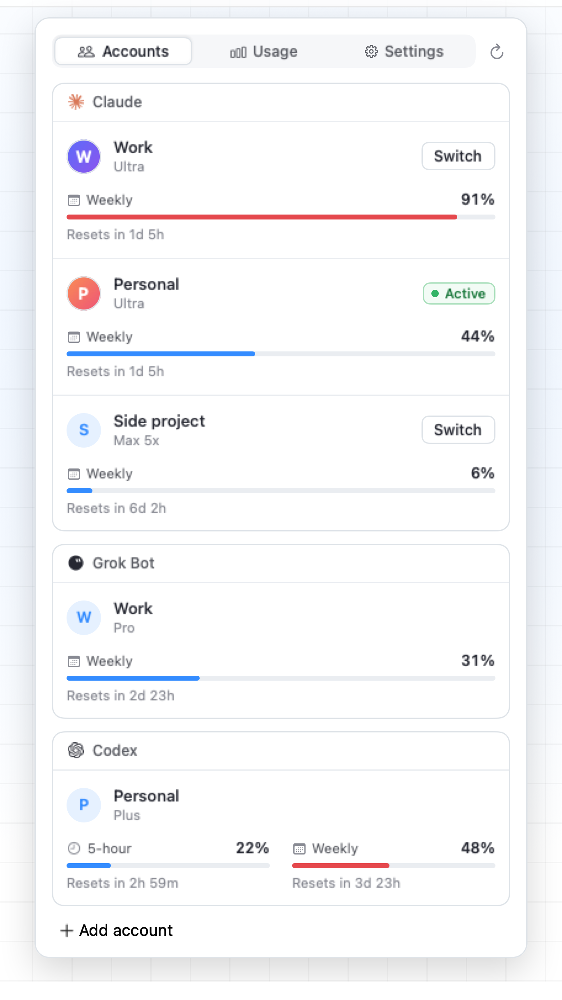
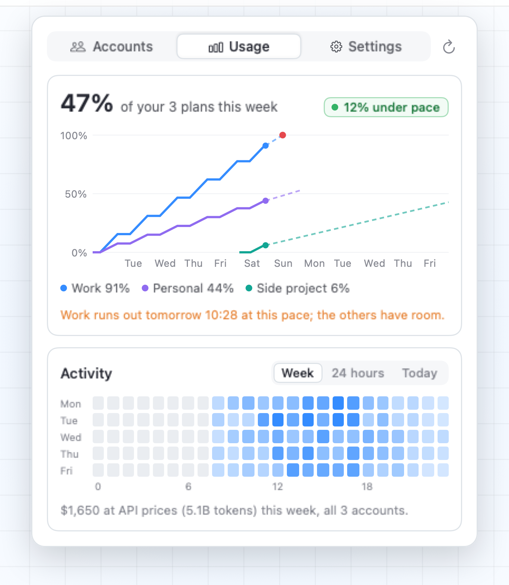
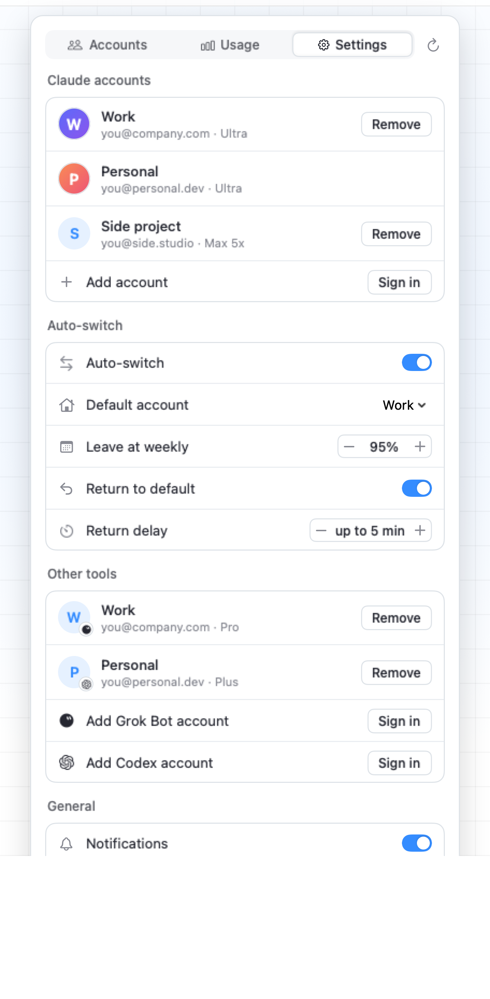

Every Claude plan,
in your menu bar.
See every plan's weekly limit, switch the live login in one click, and let it switch for you. Track Grok Bot and Codex beside it. Free and open source.
macOS 14 or later · works with Claude Code
One click, every session
Claude Switch swaps which account Claude Code uses, for every terminal, IDE and agent on your Mac at once. No logging out, no browser.

Accounts
Each account's weekly limit. Blue, orange when it's running close, red when it's on course to run out. Hover for the reset time and when it runs out at this pace.

Usage
Every plan's weekly limit on its own clock, projected to its reset: which plan runs out first, and whether you'd run out of all of them before one resets. Your spend at API prices, by the hour, from Claude Code's own logs on your Mac.
Grok Bot and Codex
Sign in Grok Bot and Codex accounts from Add account, as many as you like. Each tool gets a card of its own beside your Claude plans, showing the weekly allowance an X Subscription shares with Grok.

Auto-switch
Leave an account at the weekly limit you choose, and go back to your default a few minutes after its week resets. With notifications.
How it works
Everything stays on your Mac. Logins live in your Keychain; the only network calls go to Anthropic.
Install
Download the app from Releases (right-click → Open the first time), or build it yourself:
git clone https://github.com/itsnedthomas/claude-switch.git cd claude-switch ./build.sh --install